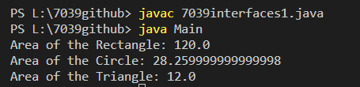

Write a Java program to create an interface Shape with the getArea() method. Create three classes Rectangle, Circle, and Triangle that implement the Shape interface. Implement the getArea() method for each of the three classes.
Code:-
/*--------------------Main class that creates objects of Rectangle, Circle, and Triangle----*/
class Main
{
public static void main(String[] x)
{
// Create a Rectangle object with length=10 and width=12
Rectangle rectangle = new Rectangle(10, 12);
// Create a Circle object with radius=3
Circle circle = new Circle(3);
// Create a Triangle object with base=4 and height=6
Triangle triangle = new Triangle(4, 6);
// Print the area of the Rectangle
System.out.println("Area of the Rectangle: " + rectangle.getArea());
// Print the area of the Circle
System.out.println("Area of the Circle: " + circle.getArea());
// Print the area of the Triangle
System.out.println("Area of the Triangle: " + triangle.getArea());
}
}
/*----------------This is an interface named 'Shape' -----------------*/
interface Shape
{
// Abstract method signature for getting the area of a shape.
double getArea();
}
/*------------------This is the 'Rectangle' class that implements the 'Shape' interface.-----------*/
class Rectangle implements Shape
{
//instance variables to store the dimensions of the rectangle.
double length;
double width;
public Rectangle(double l, double w)
{
length=l;
width=w;
}
// Implementation of the 'getArea' method as required by the 'Shape' interface.
public double getArea() {
// Calculate and return the area of the rectangle.
return length * width;
}
}
/*-----------This is the 'Circle' class that implements the 'Shape' interface.----------*/
class Circle implements Shape
{
//instance variable to store the radius of the circle.
double radius;
// Constructor for creating a Circle object with a given radius.
public Circle(double r)
{
radius = r;
}
// Implementation of the 'getArea' method as required by the 'Shape' interface.
public double getArea()
{
// Calculate and return the area of the circle using the formula: π * r^2.
return 3.14 * radius * radius;
}
}
/*-----------This is the 'Triangle' class that implements the 'Shape' interface.----------*/
class Triangle implements Shape
{
// Private instance variables to store the base and height of the triangle.
double base;
double height;
// Constructor for creating a Triangle object with a given base and height.
public Triangle(double b, double h)
{
base = b;
height = h;
}
// Implementation of the 'getArea' method as required by the 'Shape' interface.
public double getArea() {
// Calculate and return the area of the triangle using the formula: 0.5 * base * height.
return 0.5 * base * height;
}
}
Output:-
